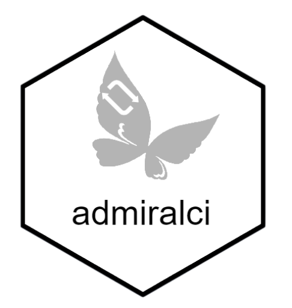

This repository contains GitHub Actions continuous integration/continuous delivery (CI/CD) workflows, most of which are used by admiral and its extensions. Workflows defined here are responsible for assuring high package quality standards without compromising performance, security, or reproducibility.
Please refer to the .github/workflows directory to view the source code for the GitHub Actions workflows.
Notes :
- Some workflows are using github actions from InsightsEngineering group.
- Most of the workflows are sharing the same steps (see Common workflows structure) (boilerplate code)
Available workflows
Workflows triggered by Admiral MR (feature branch to main branch)
How to use these workflows?
Reuse (recommended)
You could add just one file called .github/workflows/common.yml to directly import these workflows while receiving the latest updates and enhancements, given that the workflows defined in this repository are reusable via the [workflow_call][workflow_call] GitHub Actions event.
The contents of the .github/workflows/common.yml file are available in the common.yml.inactive file in this repository. Feature flags in the form of workflow_call inputs are available for customization purposes. Feature flags are documented in the same file - look for the env: and with: hashes in the file for feature flags.
Copy as-is (not recommended)
Alternatively, if you want a high level of customization, you could simply copy the workflows as-is from this repository to your repository and modify them to your liking.